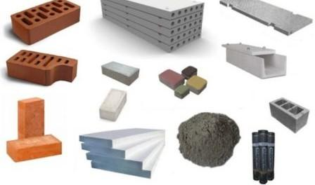

Будіве́льні матеріа́ли — це різні за складом, структурою, формою та властивостями речовини, застосовувані безпосередньо для будівництва споруд або для виготовлення з них збірних елементів на спеціалізованих підприємствах. Найпростіші будівельні матеріали — пісок, глина, деревина, природний камінь, гравій
Види і класифікація будівельних матеріалів
План статті
Вступ

КЛАСИФІКАЦІЯ ЗА СТУПЕНЕМ ГОТОВНОСТІ
Говорячи про походження, потрібно пам`ятати, що ті матеріали, які зачіпаються в даній статті, можуть бути, або штучними, або природними. Які ж відносяться до тієї чи іншої категорії:
- безпосередньо матеріали, використовувані в будівельних роботах (бетон, цегла, пісок, цемент тощо);
- будівельні вироби, що є наступним етапом після матеріалів (ж/б конструкції, панелі, віконні конструкції, дверні рами, кабіни і т.д).
КЛАСИФІКАЦІЯ ЗА ПОХОДЖЕННЯМ
Дана градація є однією з найпростіших, оскільки тут існує всього лише дві категорії:
- природні - асфальт і бітум природного походження, торф, всі види деревини, природний камінь. Для отримання таких матеріалів, використовується природна сировина, а сам процес виготовлення не є надто складним;
- штучні - скло, залізобетон, цегла, цемент і т.д. Такі матеріали виготовляють не тільки з натурального, а й штучної сировини. У процесі виробництва, воно (сировина) докорінно змінює свою структуру, набуває такі експлуатаційні характеристики, які не притаманні вихідного матеріалу.
Походження - один з найважливіших критеріїв градації.
КЛАСИФІКАЦІЯ ЗА ПРИЗНАЧЕННЯМ МАТЕРІАЛІВ
Тепер розглянемо класифікацію, відповідно до якої, будівельні матеріали розрізняються за своїм призначенням. Це самий великий розділ з тих, які описані в даній статті.
За своїм призначенням, матеріали для будівельних робіт бувають:
- конструкційні - передають навантаження (і сприймають їх) в складі будівельних конструкцій в будівлях і спорудах;
- теплоізоляційні - використовуються для мінімізації втрат тепла в приміщеннях, зниження витрат енергоносіїв в холодну пору року;
- акустичні - дозволяють знизити рівень шуму (так званого, «шумового забруднення») в житлових, промислових і комерційних приміщеннях;
- покрівельні та гідроізоляційні - для чого використовуються такі матеріали, видно з їх назви;
- герметизуючі матеріали - основним їх завданням є закладення стиків в конструкціях будівель і споруд, захист теплоізоляційних, конструкційних та інших видів матеріалів від того негативного впливу, який можуть мати довкілля;
- спеціального призначення - кислототривкі і вогнетривкі матеріали для спеціальних будівель і споруд.
Всі три класифікації будівельних матеріалів за видами і типами, наведені вище по тексту, є основними і використовуються в сучасному будівництві в рівній мірі.